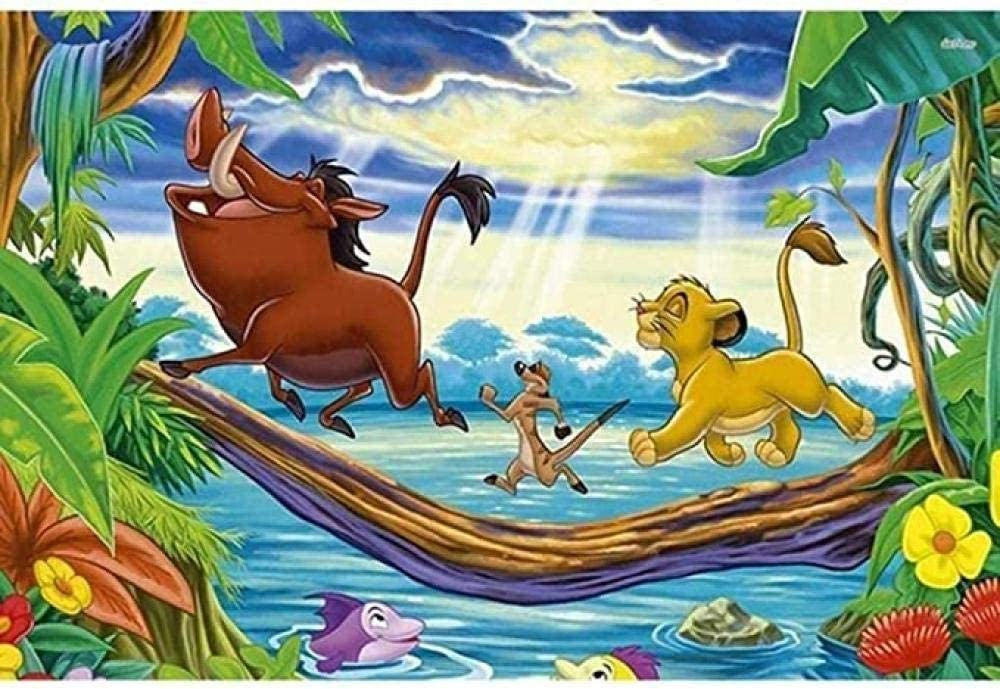

El león en el septimo arte en el cine.
El rey leon 1994
El rey león (The Lion King en su versión original) es la 33ª película animada producida por Walt Disney Pictures. Estrenada el 24 de junio de 1994 y en Europa el 8 de noviembre, la película cuenta la tragedia de Hamlet de Shakespeare,protagonizada por un joven león africano. Ganó el Globo de Oro a la mejor película - Comedia o musical. La película, que tiene una versión homónima de teatro musical cuyas canciones fueron escritas por Elton John y el letrista Tim Rice, ganó un Oscar y esta un Tony.
El rey león 2019
El rey león (título original en inglés: The Lion King) es una película musical de imagen generada por computadora de 2019 producida por Walt Disney Pictures, dirigida por Jon Favreau y escrita por Jeff Nathanson. Se trata de una nueva versión de la película homónima de animación de 1994 y contiene los mismos elementos de la obra Hamlet de William Shakespeare. La cinta se estrenó el 19 de julio de 2019 y es la película remake adaptada al realismo con más recaudación y éxito de Disney, superando a La bella y la bestia (2017) y a El libro de la selva (2016) (también dirigida por Favreau). Además, es la película hecha con animación más taquillera de la historia, al recaudar $1.652.054.209 dólares, superando así a Frozen (USD $ 1.276.480.318), y la segunda película más taquillera de 2019, solo siendo superada por Avengers: Endgame. La película recibió críticas mixtas a positivas quienes solo elogiaron las actuaciones y efectos visuales, pero criticaron la falta de tiempo y el diseño de los personajes. Fue nominada en los Premios Óscar de 2020 en la categoría de Mejores Efectos Visuales, que ganó la película 1917.
Desarrollo
El 28 de septiembre de 2016, Walt Disney Pictures confirmó que Jon Favreau dirigiría una versión de la película de dibujos animados El rey león de 1994. La nueva película presentó canciones de la antigua tras los éxitos de taquilla conseguidos por otras versiones de películas de Disney como Maléfica, La cenicienta, El libro de la selva y La bella y la bestia, que además recibieron elogios de la crítica.3 El 13 de octubre de 2017, Disney confirmó que había contratado a Jeff Nathanson para escribir el guion de la nueva versión.4 En noviembre del mismo año, en una entrevista con Comingsoon.net, Favreau declaró que la tecnología cinematográfica virtual que había usado en El libro de selva sería usada ampliamente en El rey león.5
Reparto
Basado en la película de animación del año 1994, la cual tiene el mismo nombre. La película es protagonizada en su idioma original por las voces de Donald Glover, Beyoncé Knowles, James Earl Jones, Chiwetel Ejiofor, Billy Eichner, Seth Rogen, John Oliver, John Kani, Alfre Woodard, Eric André, Florence Kasumba, Keegan-Michael Key, J.D. McCrary y Shahadi Wright Joseph.
Musica
El 1 de noviembre de 2017, fue anunciado que Hans Zimmer regresaría para hacer la banda sonora de la película, habiendo hecho anteriormente la banda sonora de la versión animada de 1994.16 El 28 de noviembre de 2017, se comunicó que Elton John había firmado un contrato con el proyecto para rehacer sus composiciones musicales de la película original antes de su jubilación.17 El día siguiente se informó que Beyoncé ayudaría a Elton John en la revisión de la banda sonora.18 El 9 de febrero de 2018, John informó que él, Tim Rice y Beyoncé crearían una canción nueva para los créditos finales de la película.19 A finales de mes, se reveló que varias canciones de la película original serían incluidas en la película, siendo estas «Can You Feel the Love Tonight», «Hakuna Matata», «I Just Can't Wait to Be King" y «Circle of Life».20También se reportó que la canción «Be Prepared» sería incluida en la película.21 22 23 «Spirit», interpretada por Knowles-Carter y escrita por ella misma, Ilya Salmanzadeh y Labrinth, fue lanzada el 9 de julio de 2019 como el sencillo principal de la banda sonora.24 La película también presenta todas las canciones de la película original, una versión de "The Lion Sleeps Tonight" de The Tokens y la canción "He Lives in You" de Rhythm of the Pride Lands y la producción de Broadway.25 La banda sonora, con la partitura de Zimmer y las canciones de John y Rice, se lanzó digitalmente el 11 de julio de 2019 y físicamente el 19 de julio de 2019. Knowles-Carter también produjo y comisarió un álbum titulado The Lion King: The Gift, que presenta «Spirit», así como canciones inspiradas en la película. El álbum fue lanzado el 19 de julio de 2019
Estreno
La película El rey león se estrenó el 19 de julio de 2019, justo en el día del 25.º aniversario del estreno de la película original del año 1994. Para celebrarlo, celebridades como Beyoncé y Donald Glover se reunieron con Meghan Markle, la duquesa de Sussex, Inglaterra, durante el estreno de la película en Reino Unido.